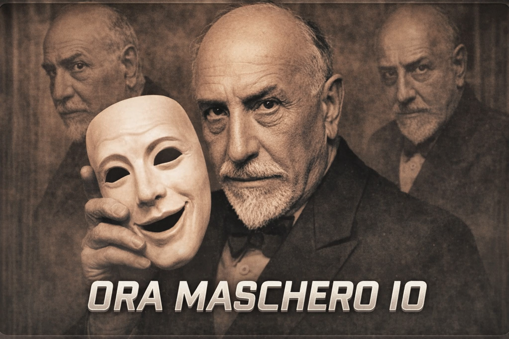
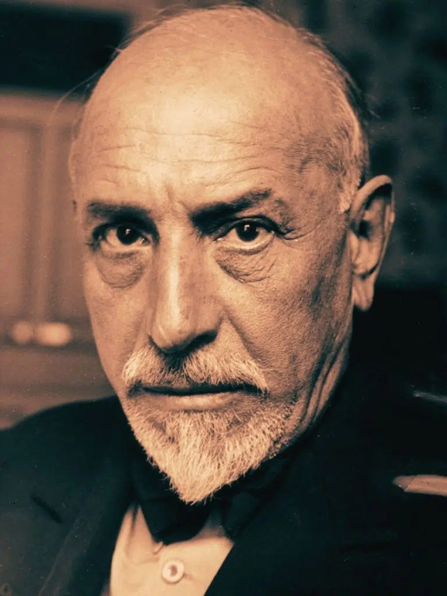

Luigi Pirandello nasce il 28 giugno 1867 ad Agrigento, in Sicilia.
È stato uno dei più importanti scrittori e drammaturghi italiani,
premio Nobel per la letteratura nel 1934. La sua opera esplora la crisi
dell’identità, il contrasto tra realtà e apparenza e la frammentazione dell’io.

Visione del mondo
La filosofia di Pirandello si basa sulla visione vitalistica di Bergson:
la vita è un flusso continuo e chi si sottrae a questo movimento è destinato
a una morte interiore.
Incomunicabilità
La realtà è soggettiva e multiforme. L’uomo vive intrappolato in maschere
imposte dalla famiglia, dal lavoro e dalla società. Nasce così il concetto
di:
- Uno (per sé)
- Nessuno (identità interna)
- Centomila (come ci vedono gli altri)

Fratture personali
-
Frattura economica e familiare: fallimento della miniera e malattia mentale della moglie.
-
Frattura filosofica: perdita delle certezze positiviste.
Poetica dell’umorismo
Pirandello distingue tra:
- Avvertimento del contrario: percezione del comico
- Sentimento del contrario: comprensione profonda del dolore
Dietro il comico si nasconde sempre una verità tragica.

Il fu Mattia Pascal
Pubblicato nel 1904, racconta la storia di Mattia Pascal che,
creduto morto, assume una nuova identità: Adriano Meis.
Tuttavia, senza documenti non può vivere davvero: non può sposarsi,
né difendersi legalmente.
Torna alla sua identità originale, ma ormai è “fu”.
Il romanzo mostra che senza una “maschera sociale” non possiamo esistere.
Celebre frase finale:
"Io sono il fu Mattia Pascal"